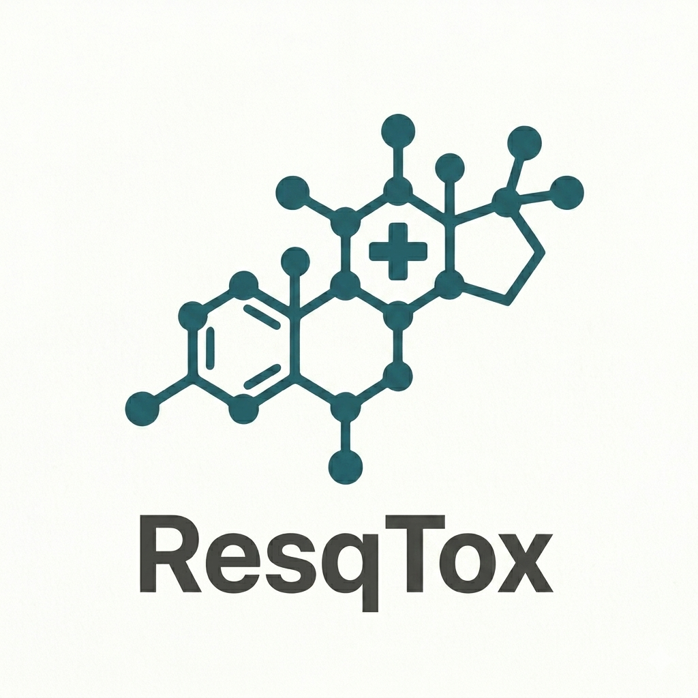

ResqTox®
🌓
Hledat
Tox-Checker
✕
Klinický nález
Zornice
Nezjištěno
Mióza (úzké)
Mydriáza (široké)
Střední postavení
Puls (TF)
Nezjištěno
Tachykardie
Bradykardie
Normokardie
Dýchání (DF)
Nezjištěno
Bradypnoe / Útlum
Tachypnoe
Kůže
Nezjištěno
Suchá / Horká
Vlhká / Orosená
Cyanotická (modrá)
Stav vědomí
Nezjištěno
Útlum / Kóma
Agitace / Psychóza
Křeče
Resetovat filtry
Toxidrom
--
Klinické příznaky
Terapie (Dle SPC / TIS)
--
Antidotum / Specifická léčba
--
Pozor
--
Zpět na vyhledávání